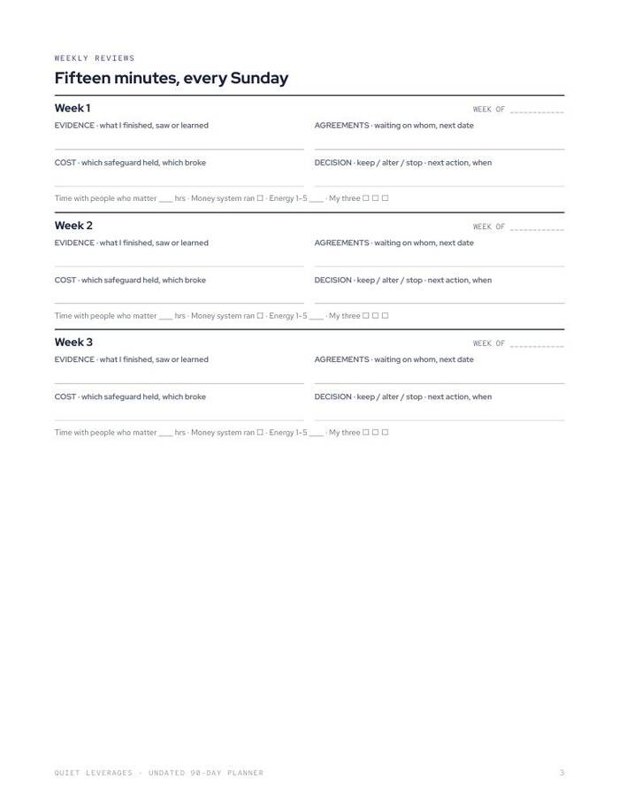
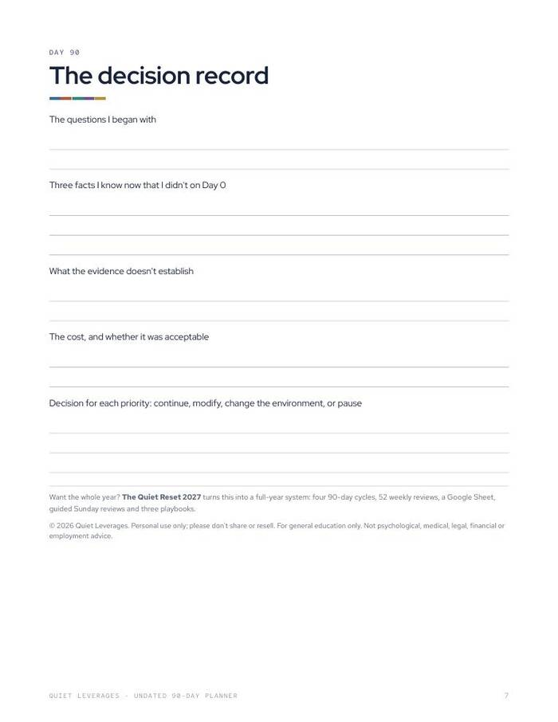

One quarter, three priorities, thirteen fifteen-minute Sunday reviews.
Set a question, a smallest test and three measures for each priority. Review every Sunday for thirteen weeks, then record a Day-90 decision.
Printable PDF. US Letter, prints fine on A4 at 'fit to page'.

Start any Monday
Undated, so you begin when you are ready, not on the first of the month.
Three priorities
A question, a smallest test and three measures for each.
Thirteen short reviews
Evidence, agreements, cost and decision, in fifteen minutes.
weekly review blocks
priorities per quarter
Day-90 decision record
What you leave with
A quarter you can finish
Three priorities is a number you can hold in a busy week.
Evidence each week
Each review records what finished, what you agreed to, what it cost and what you decide.
A decision at Day 90
A record that asks whether to continue, change or stop.
A bigger system when you want one
The Quiet Reset 2027 runs four of these cycles in a year.
What's in the download
Set three priorities, then review each Sunday.
- Quarter setup. A question, a smallest test and three measures per priority.
- 13 weekly review blocks. Evidence, agreements, cost, decision.
- A Day-90 decision record.
- Undated. Start any Monday.


Set it up once, review every Sunday
Set the quarter
Write three priorities with a question, test and measures.
Review weekly
Fifteen minutes each Sunday, thirteen times.
Decide at Day 90
Record whether to continue, change or stop.
Is this the right size?
Use this if
- You want to run one quarter with a clear finish.
- You prefer a printed planner you can start any Monday.
- You want a weekly review you can keep.
Skip it if
- You want a full-year plan across all twelve areas. See The Quiet Reset 2027.
- You want a dated diary. This planner is undated.
The numbers behind it
of managers were engaged in 2025, down from 31% in 2022.
Gallup, 2026report money dysmorphia, feeling broke despite a healthy position.
Intuit Credit Karma, via FinderWhat readers say about Undated 90-Day Planner
Get Undated 90-Day Planner
One small tool, one sitting.
- Printable PDF
- Quarter setup for three priorities
- 13 weekly reviews and a Day-90 record
Before you decide
What format is it?
A printable PDF. Print it or use it on a tablet with any PDF app.
How long does it take?
Set up the quarter once, then give each Sunday review fifteen minutes.
Who is it for?
Anyone who wants a short, structured quarter with weekly check-ins.
Will it print on A4?
Yes. It is US Letter and prints fine on A4 at 'fit to page'.
Is it dated?
Yes. It is undated, so you can start any Monday.
Is this advice?
No. It is a planning worksheet and general education, not medical, psychological, legal, financial or employment advice.
The next step after this one

One quarter, three priorities, thirteen fifteen-minute Sunday reviews.
Set a question, a smallest test and three measures for each priority. Review every Sunday for thirteen weeks, then record a Day-90 decision.
Get it for $12Instant download on Gumroad. Print it or use it on a tablet.